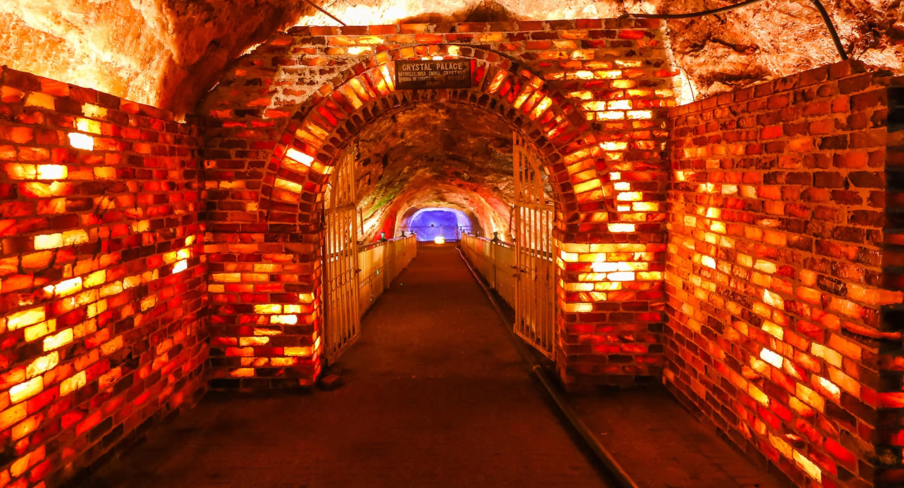

<div class="portfolio-single-load clearfix">
    <div class="custom-full-width-box">
        <div class="custom-container">
            <div class="custom-row align-items-center">
                <div class="custom-image-column">
                    
                </div>
                <div class="custom-text-column">
                    <h2 class="custom-heading">Khewra Salt mines</h2>
                    <p class="custom-paragraph">
                        A wonder of salt and the world's largest salt reserves are found 160km south of the Capital at the salt range-extended northwards to the Jehlum city. They are the oldest Salt Mines of the Subcontinent and produce 98% pure salt. The busiest tourist spot as it is estimated that almost 40,000 tourists visit per month. Splendid structures are present in the salt city like salt caves, the famous salt bridge,  the Shahi mosque constructed with the help of colorful salt bricks, the unique emergency dispensary, the distinctive Chandni chowk, a pool of ponds, the magnificent Sheesh Mahal. Secondly, one can collect the art pieces made up of salt in the nearby Khewra Bazar.

                    </p>
                </div>
            </div>
        </div>
    </div><!-- .custom-full-width-box end -->

</div><!-- end single-project -->
